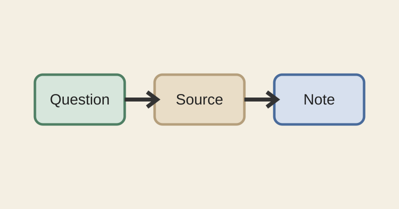

أصول القراءة البحثية
المؤلف: فريق اختبار القارئ الذكي
هذا كتاب اختبار صغير للتحقق من أن القارئ يعرض العربية من اليمين إلى اليسار، ويحفظ بنية النص عند الاستيراد.
الفصل الأول القراءة المقصودة
معنى القراءة المقصودة
ليست القراءة جمعاً للنصوص فحسب، بل هي فهم السياق وتسجيل الفائدة والقدرة على الرجوع إلى المصدر عند الحاجة.1
الجملة المتكررة للاختبار هي: الرجوع إلى المصدر يحفظ سياق الفائدة.
للمزيد انظر دليل المنهج.
- حدّد السؤال قبل البدء.
- اقرأ المقطع في سياقه.
- دوّن الفائدة مع موضعها.
- يمكن أن تكون الملاحظة قصيرة.
- ويمكن أن تتحول إلى بحث مستقل.

| العنصر | الغرض | مثال |
|---|---|---|
| السؤال | تحديد المقصود | ما معنى الوقت؟ |
| المصدر | مراجعة الدليل | كتاب، فصل، فقرة |
| الملاحظة | حفظ النتيجة | رابط إلى المقطع |
الفصل الثاني التوثيق والعودة
لماذا نحتاج إلى رابط ثابت
الجملة المتكررة للاختبار هي: الرجوع إلى المصدر يحفظ سياق الفائدة.
إذا كانت العبارة متشابهة في موضعين، فلا يكفي البحث عن الكلمات وحدها؛ بل يحتاج النظام إلى هوية ثابتة للمقطع.2
مثال في الأرقام
في سنة 2026 راجع الباحث 12 مصدراً، ثم أضاف الرقم العربي ١٢ إلى ملاحظاته للمقارنة بين أنماط الأرقام.
الملاحظة البحثية الجيدة لا تنفصل عن موضعها في الكتاب.
الفصل الثالث بناء الملاحظة
من القراءة إلى البحث
بعد قراءة المقطع، اكتب الفكرة بلغتك، ثم أضف النص المنقول ورابطه إلى المصدر. لا يكفي أن تتذكر العبارة؛ يجب أن تستطيع العودة إليها.
الجملة المتكررة للاختبار هي: الرجوع إلى المصدر يحفظ سياق الفائدة.
| الخطوة | العمل |
|---|---|
| ١ | تحديد السؤال |
| ٢ | قراءة السياق |
| ٣ | كتابة الملاحظة |
هذه صفحة ثالثة فعلية في مصدر الاختبار، وليست مجرد زيادة في طول الصفحة الأولى.